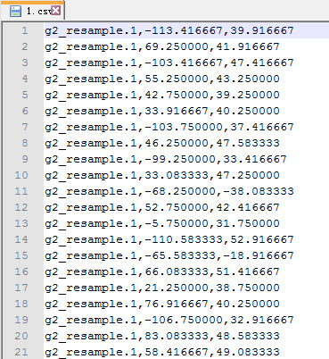
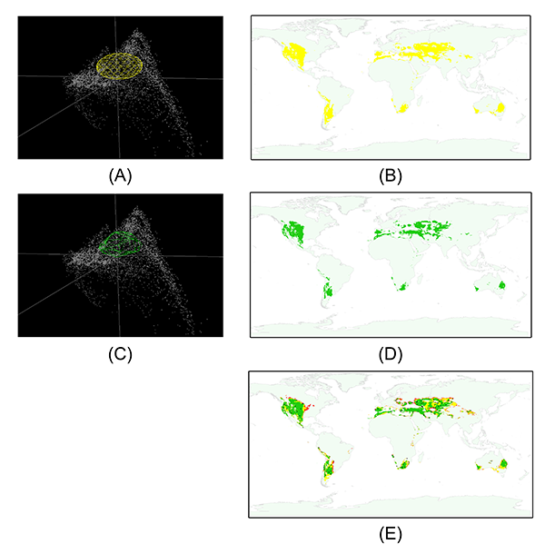

Using MVE and CP to estimate the ecological niche.
Note:
The data used in this case study can be downloaded via this link.
In this section, we introduced a method to estimate the ecological niche via MVE and CP, which can be regarded as two simple ENMs. The N we used in this section was N No.2 which we generated from a previous section.
1. Data preparing
It is hard to see the different between MVE and CP, if we create ENM via MVE and CP with all the occurrences of N. Thus, we use the resampling method to extract a subset of N. The resampling method is combined with two functions, "Export to ENMs (Fig.1)" and "Generate N(s) from occurrences (Fig.2)", which we used in the previous sections.
After clicking the menu in Fig.1, we get a dialog to fill in the required parameters for resampling (Fig.3). In this dialog, we select the N No.2 to resample, set up the other parameters shown in Fig.3. In this case, we pick 100 occurrences from N No.2 randomly. Thus, we set the "Number" to 100, and check the checkbox on the right side of the textfield.
In the output folder, we can find "1.csv" file which contains the longitude and latitude list in Maxent format (Fig.4). In case study No.1, we used this output to build ENM with Maxent. In this case, we use it to generate another N with Generate N(s) from occurrences function. (Fig. 5)


Then we open the new N in NicheA. To estimate the ecological niche via MVE and CP, we need to invoke the "Create a virtual N" function (Fig.6) twice. In this case, we select the "By MVE of N below (Fig.7)" and "By CP of N below (Fig.8)" individually, set the first N as the new N we generated via the resampled occurrences, and set the second N list as "Background cloud (BC)".

In each result folder, we can find a "present.tiff" file. It is the estimated distribution via MVE or CP. When we compare them, we can find that the MVE are closer to the exsiting fundamental niche of N than CP. (Fig.9)
